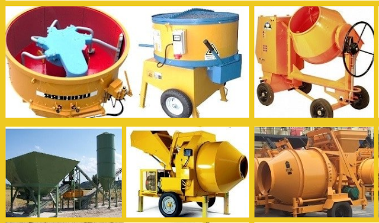

بهذه الشركة تقوم بصناعة وتصنيع الاسمنت والخلاطات وتقوم ايضا ببيع هذه المنتجات لكل الاشخاص وبسعر مناسب
CONCRETE MIXERS
Hamac provide our clients with various models of concrete mixers and concrete agitator for different clients requirement.
Our product contains JS twin-shaft concrete mixer, concrete agitators, HST Twin-shaft concrete mixer which are suitable for wet concrete; MP series planetary concrete mixer which is suitable for semi-hard concrete which is for high quality requirement.
It is widely sold to Africa, Middle East, Latin America, Asia and East European countries.
The excellent performance is recognized in the several application fields, in the Concrete Industry as well as Industrial Plants (waste treatment, chemical industry, glass industry,concrete agitator). Depending on the type of application, all mixers can be equipped with several accessories and customized with many add-ons in order to achieve specific productivity, mixing quality and life expectancy requested in a certain
Forced concrete mixers can be divided into twin shaft concrete mixer and single shaft concrete mixer. What are the differences between twin shaft concrete mixer and single shaft concrete mixer?
1, The difference in production efficiency.
The smallest model of the twin-shaft concrete mixer is the JS500, which produces 500 liters of concrete each time. The largest model of the twin-shaft concrete mixer is the JS4000, which produces 4,000 liters of concrete each time. There are only two models of single shaft concrete mixer currently, the JDC350 and the JDC500, each production of concrete is 350 liters and 500 liters respectively.
2, The difference in scope of application.
The production efficiency determines the use range of concrete mixer. Twin shaft concrete mixer is suitable for large, medium and small sized construction projects, which can be used as a single machine or as host of concrete batching plant. Single shaft concrete mixer is more suitable for small and medium construction site.
3, The difference in drive system.
The drive system of the single-shaft concrete mixer is a chain structure, while the system of the twin shaft concrete mixer is a sliding gear and a V-belt structure. Such a structure does not make too much noise during rotation, and the slip gear structure has a protection function. Relatively safe and convenient.
4, The difference in structural details.
There is a mixing shaft in the mixing drum of the single shaft concrete mixer, and mixing blades are distributed on the mixing shaft; there are two mixing shafts of the same size in the mixing drum of the twin shaft concrete mixer, and the mixing blades are evenly distributed on the two shafts. Due to the different structures, the mixing effect of the twin shaft concrete mixer and the single-shaft concrete mixer is different, and the mixing effect of the twin shaft concrete mixer is better.
The above is the difference between twin shaft concrete mixer and the single-shaft concrete mixer. Zhengzhou Jinsheng Construction Machinery Co., Ltd produces all models of twin shaft concrete mixers and single-shaft concrete mixers. If you need to purchase, please dial the telephone on our website directly for consultation!

يقوم بالاشراف على هذه الشركة كلا من المهندس
المهندس:أحمد أيمن حسينى$
المهندس:محمد عبد الصفتى$